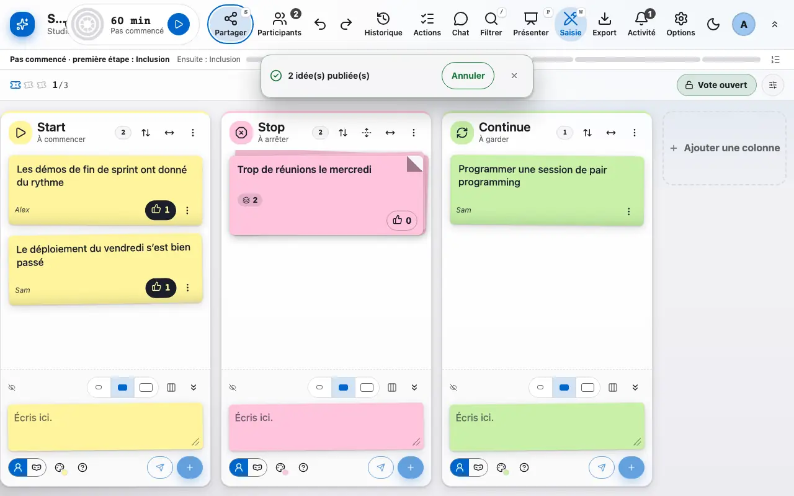
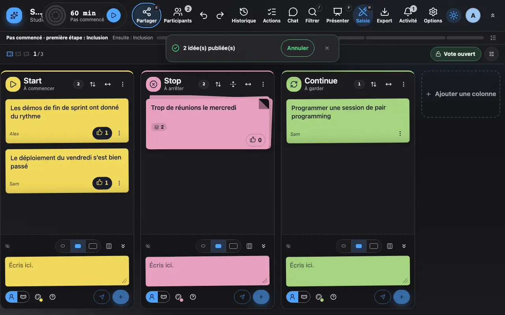

Écrire et publier des idées
Les idées restent privées tant que tu ne les publies pas.
1 Chaque colonne a son champ de saisie en haut, les brouillons restent sur ton appareil.
Chaque colonne a son champ de saisie, tout en haut, sous son titre, avec la mention « Visible de toi seul jusqu'à la publication ». Entrée garde l'idée en brouillon privé sur ton appareil: elle rejoint ton plateau, sous le champ, comme un post-it incliné portant un ruban « Brouillon » que personne d'autre ne voit. Le compteur de la barre d'outils dit combien de brouillons attendent, et « Tout publier » les envoie d'un coup; Ctrl+Entrée publie directement. Publie quand tu es prêt: l'idée apparaît chez tous les participants.
Sur téléphone, un bouton « Écrire une idée » ouvre le champ dans un panneau au bas de l'écran: une pastille par colonne dit où va l'idée (la colonne affichée par défaut), et le plateau de brouillons reste dans la colonne. Tu peux grouper des idées proches en les glissant l'une sur l'autre (sur un écran tactile, maintiens le doigt sur l'idée jusqu'à ce qu'elle se soulève, puis glisse-la; le menu de l'idée propose aussi « Regrouper avec... »), et voter avec le pouce.
Un bandeau permet d'annuler une publication faite par erreur pendant quelques secondes.

